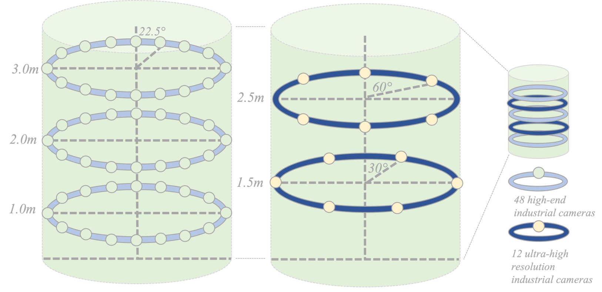

Capture system
Our capture system is built inside a spherical enclosure with a radius of 6 meters. The capture system utilizes a high-precision mixed camera array consisting of 12 ultra-high resolution industrial cameras with a resolution of 3000 × 4096 pixels, 48 high-end industrial cameras with a resolution of 2048 × 2448 pixels, all with a frame rate of 15fps, and the maximum frame synchronization time difference is less than 2ms. The lighting system uses a circular array of 16 flat light sources.
|  |
Left: bird-view of our capture system. Right: the arrangement of our high-resolution cameras.
Hi-Fi Multiview
A sample of our high-fi multi-view human videos.

Hover mouse over the image for a zoomed-in view. If no zoom-in effect in your browser, press the image to view in a new window or change your browser to firefox. Download raw resolution file.
ID Distribution
Our dataset has sufficient diversity in terms of people, clothing, actions, and interactive objects. We collected a total of 500 individuals, with 529 different sets of clothing, 269 different types of daily actions, and 153 different types of special performances, including relevant interactive objects for some actions.
Regarding the people dimension, there were 500 actor instances with a ratio of 4:3:2:1 for Asian, Caucasian, Black, and Hispanic individuals, respectively, with a uniform distribution of gender and wide coverage of age and body shape distribution
The distribution of actors’ attributes including height, weight, and age.
Action & Clothes Distribution
Regarding the action dimension, the subjects were divided into two types: special scene IDs and normal scene IDs. Special scene IDs performed actions from a special action library, including special costume performances, artistic movements, sports activities, etc. with 153 sub-categories. Normal scene IDs performed actions from a normal daily activity library, including daily-life activities, simple exercises, and social communication, with 269 categories in total.
Each ID was equipped with a set of self-provided clothing and 2 sets of normal daily clothing from a fixed clothing library to ensure diversity. Individuals in special scenes wore corresponding special costumes. Our designed daily clothing library had a total of 529 items, covering all 50 clothing types in DeepFashion, with a random distribution of color, material, texture, and looseness for each clothing type. For each action, we had a description of the clothing, including type for upper, lower, and footwear.

Illustration of the action and clothes label distribution.
Matting Refinement
We analyze the performance of the state-of-the-art background matting method Bisenet v2 and employ it to automatically detect and filter the green backgrounds out of the image. There are still several corner cases that prevent the learning-based matting method to generate clean and clear binary masks, leading to several kinds of problematic results, e.g., noisy backgrounds, broken bodies, and missing bodies and objects. To further improve the matting quality, we adopt the traditional computer vision algorithm GraphCut to refine the predicted masks the overall error rate is reduced from 11% to 2%.
{kind=link}
Testset Feature
our dataset has different levels of difficulty, with noticeable performance degradation in state-of-the-art methods when dealing with more complex actions, clothing deformations and textures, and finer levels of interactive object movements. Our dataset poses a greater challenge to cur rent novel view synthesis methods, and we hope that the DNA-Rendering dataset’s broad and realistic distribution of identity, clothing, and motion will strongly promote the development of this field. .
Test Set